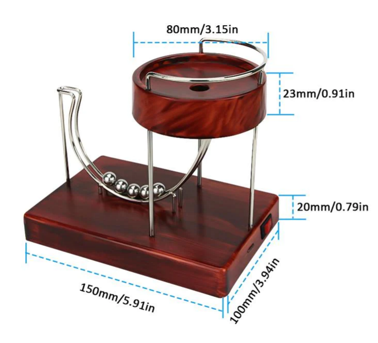
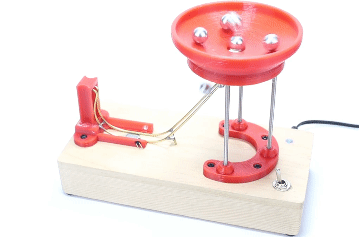
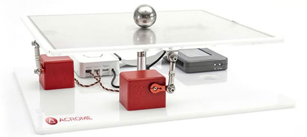
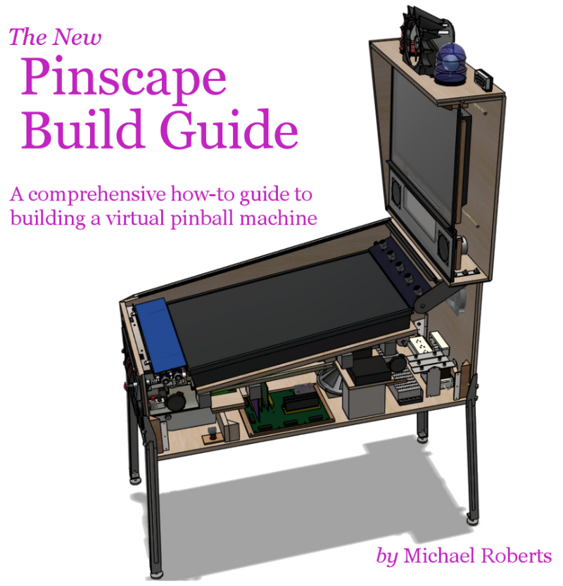

Loop the loop
循環繞圈運動系統:
設計一組機電模擬系統, 可以讓鋼球在以下圖示的圓盤孔洞落下後, 沿著軌道運動並回到圓盤上, 以進行重複循環繞圈運動.


(file source)
References:
https://physics.stackexchange.com/questions/708154/fake-perpetual-motion-device-using-an-electromagnet
https://www.researchgate.net/publication/360529167_A_%27perpetual_motion_machine%27_powered_by_electromagnetism
https://physics.stackexchange.com/questions/188208/why-doesnt-this-magnetic-perpetual-motion-machine-work
homework and exercises - Tricky conceptual question: ball sliding and rolling down incline - Physics Stack Exchange
classical mechanics - Will a ball slide down a lumpy hill over the same path it rolls down the hill? - Physics Stack Exchange
https://youtu.be/V70w3cxDJIM
https://youtu.be/KzUVJiyzQwg
CTM Example: Ball & Beam Modeling (unisi.it)
9.6: Rolling Motion - Physics LibreTexts
5.8: Rolling and Slipping Motion - Physics LibreTexts
newtonian mechanics - How can a marble on a circular track return to its point of origin using only its own momentum? - Physics Stack Exchange
Explaining Mechanics with a Marble run - Maths Careers
Marble Roller Coaster: Converting Potential Energy to Kinetic Energy | Science Project (sciencebuddies.org)
12. ROLLING, TORQUE AND ANGULAR MOMENTUM (rochester.edu)
Ball balancing
鋼球平衡台模擬系統:
設計一組如下圖所示之機電整合模擬系統, 可以讓鋼球停在平台上使用者所指定的位置.

(above image file source) - download courseware.zip (or from @nfu onedrive)
後續協同應用: 虛實整合網際 Tilt Maze Game， https://craigpickard.com/tilt-2014，Tilt Maze App，https://youtube.com/shorts/HiWKgF6PBco，Reinforcement learning Tilt Maze platform system
Virtual pinball
虛實整合彈珠台機電系統:
設計一組如下圖所示的虛實整合彈珠台, 使用實體按鈕 (電腦鍵盤按鈕或 Arduino based 硬體) 結合網際 Coppeliasim 模擬環境建立.

(above image file source)
Copyright © All rights reserved | This template is made with by Colorlib